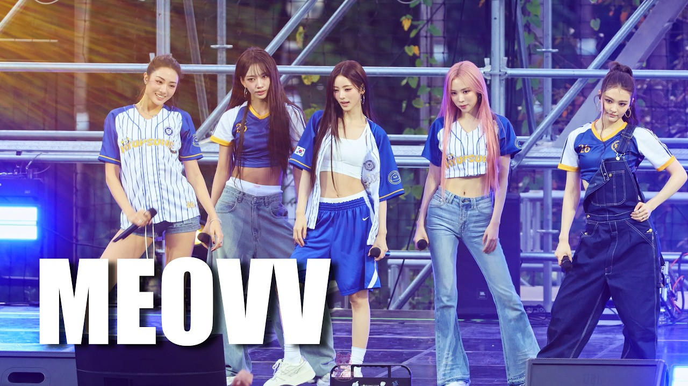

그룹 미야오(MEOVV)가 협성대학교 축제 무대에 올라 캠퍼스를 뜨거운 열기로 물들였다.
미야오가 무대에 오르자 축제 현장의 분위기는 한층 달아올랐다. 멤버들은 특유의 강렬한 무대 매력과 에너지 넘치는 퍼포먼스로 시선을 사로잡았고, 현장을 찾은 관객들은 무대에 집중하며 축제의 순간을 함께 즐겼다. 음악과 퍼포먼스가 어우러진 무대는 캠퍼스 축제의 열기를 한층 끌어올렸다. 미야오는 팀만의 개성 넘치는 분위기와 탄탄한 무대 존재감을 선보이며 관객들에게 깊은 인상을 남겼다. 협성대학교를 뜨겁게 달군 미야오의 무대는 축제 현장에 특별한 순간을 더하며 성공적으로 마무리됐다.FANTUBE ARCHIVE MEDIA는 앞으로도 아티스트들의 공연과 축제 현장, 다양한 엔터테인먼트 소식을 영상과 기사로 기록할 예정이다.